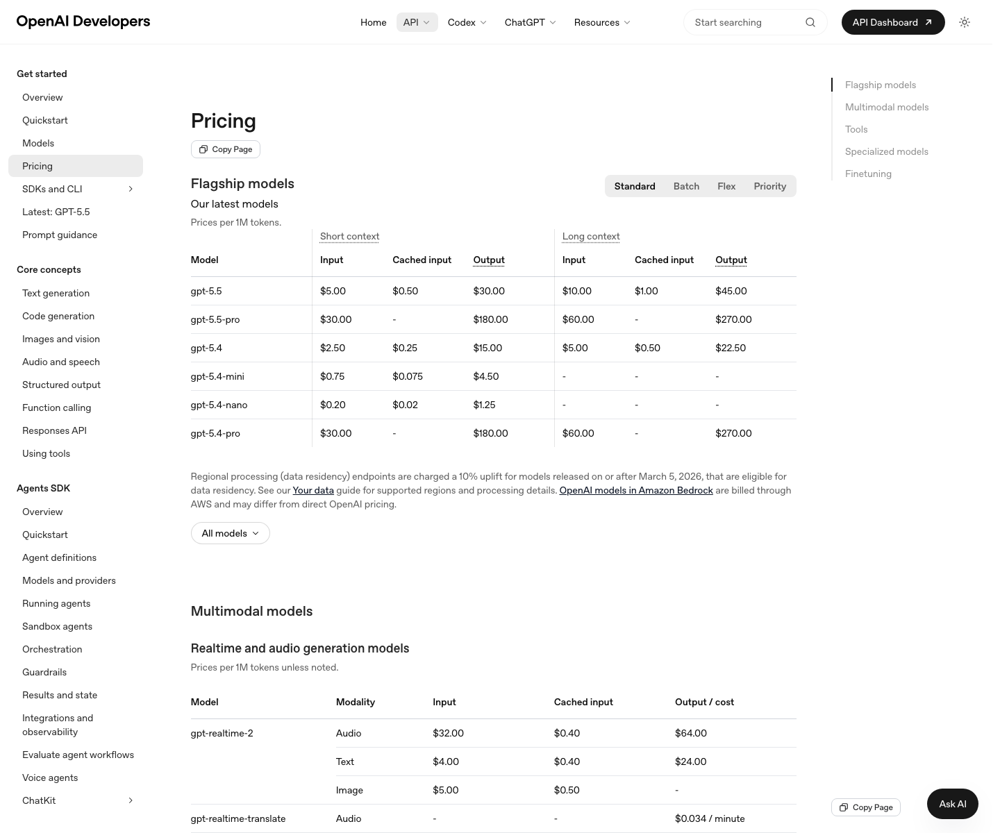

Pricing Page Visual

Local screenshot captured from the official OpenAI developer pricing documentation on June 4, 2026.
Artifact status: captured · Artifact date: June 4, 2026 · Screenshot captured: June 4, 2026 · Source reviewed: June 4, 2026 · Case reviewed: June 4, 2026 · Status: current
Core Insight
- OpenAI monetizes API computation consumed through model calls, primarily measured by token category and processing mode.
- The bill changes when model choice, input volume, cached input reuse, output length, processing tier, or tool boundaries change.
- Customers using higher-priced models, more uncached input, longer output, urgent processing, or additional tools pay more because their workload consumes more or higher-priority API capacity.
Monetized: API computation consumed · Bill changes: model, tokens, tier, and tools · Higher payers: customers with heavier or higher-priority API workloads.
Pricing Logic Deconstruction
The bill changes when model choice, input volume, cached context reuse, output length, processing tier, or tool usage changes the amount and urgency of API computation consumed.
Computation is exposed through model choice, token categories, processing tier, and tool boundaries.
Spend scales continuously with tokens, while model and processing choices change the rate applied to that usage.
Customers move into higher spend states when they select higher-priced models, generate longer output, need priority processing, or use extra tools.
The observable pricing structure is official; the strategic explanation for why OpenAI uses this structure is hypothesized and should not be treated as proof of internal cost structure.
Strategic Logic
Hypothesized pricing-relevant causal logic. Not proof.
Pricing Mechanism Logic
Primary component: driver_logic
This case uses a driver view instead of a model price table. The learner should see which variables move the bill before memorizing any model-specific rate.
Bill Examples
Limited dated examples from official pricing reviewed on June 4, 2026. These examples teach bill movement and are not a comprehensive price table. Exact price examples must be recaptured from official OpenAI pricing sources within 7 days before production promotion; if not recaptured, remove exact prices and keep only driver-based bill examples.
| Scenario | Base layer | Variable layer | Final bill logic | Pricing lesson |
|---|---|---|---|---|
| Standard uncached text workload | Reviewed gpt-5.5 standard short-context rates: input $5.00 per 1M tokens and output $30.00 per 1M tokens. | 1M input tokens plus 1M output tokens. | $5.00 input + $30.00 output = $35.00 before any tool or storage charges. | Output can dominate the bill even when input and output token counts are equal. |
| Cached context reuse | Reviewed gpt-5.5 standard short-context rates: cached input $0.50 per 1M tokens and output $30.00 per 1M tokens. | 1M cached input tokens plus 1M output tokens. | $0.50 cached input + $30.00 output = $30.50 before any tool or storage charges. | Caching changes the input portion, but output length can still drive most spend. |
| Batch-eligible asynchronous workload | Reviewed gpt-5.5 Batch short-context rates: input $2.50 per 1M tokens and output $15.00 per 1M tokens. | 1M input tokens plus 1M output tokens processed through Batch. | $2.50 input + $15.00 output = $17.50 before any tool or storage charges. | Processing urgency changes the price-performance tradeoff only when the model and endpoint support Batch and the workload can tolerate delayed completion. |
Pricing Architecture
Structure only: the API pricing architecture separates model rate, token category, processing mode, and tool boundaries.
How work is processed
How usage is structurally treated
Uncached prompt or context tokens are charged as input.
Repeated eligible context can be charged through the cached input category.
Generated response tokens are charged separately from input.
Boundary Crossing Map
Where a customer crosses into a different API pricing state.
Decision Tension Layer
The central tension is forecastability: token-metering is precise, but the buyer must predict how model choice, output behavior, caching, processing tier, and tools interact.
Input token volume, cached input reuse, and output token volume must be forecast together before the bill is easy to estimate.
Output token volume can grow because of prompt style, product behavior, or multi-step reasoning needs.
Tool usage boundary can add search, storage, container, or tool-call charges beyond core model tokens.
Decision Alternatives
Concrete pricing moves, trade offs, and leading indicators.
Expected effect: Reduce bill surprise and improve model selection discipline.
Trade off: More salient cost drivers may slow simple experimentation.
Leading indicator: More customers set budgets or choose lower-cost models before production launch.
Expected effect: Move asynchronous jobs into a better urgency-cost match.
Trade off: Customers may overuse Batch for latency-sensitive jobs or workloads that cannot tolerate delayed completion.
Leading indicator: More eligible bulk jobs use Batch without support escalation.
Expected effect: Encourage reusable context patterns where appropriate.
Trade off: Customers may over-optimize prompt design for price.
Leading indicator: More repeated-context workloads show cached input usage without worse output quality.
Decision Priority
Which pricing move should be tested first, and why.
| Rank | Move | Why this priority | Risk | Complexity | Success metric |
|---|---|---|---|---|---|
| 1 | Token mix estimator | Reduces the main forecasting friction without changing prices or processing mode. | low | medium | Increase in customers setting budgets or selecting model tiers after viewing token guidance. |
| 2 | Batch eligibility nudge | Teaches the urgency-for-cost tradeoff after customers understand token mix. | medium | medium | Share of eligible bulk jobs moved to Batch without increased failure or support rate. |
| 3 | Cached context education | Can improve cost efficiency but requires careful workload understanding. | medium | low | Increase in cached input share for repeated-context use cases without lower task quality. |
Reasoning Error Check
Stress test the pricing logic before accepting the recommendation.
| Reasoning risk | Case-specific check | Evidence needed | Failure signal |
|---|---|---|---|
| Published prices are treated as proof of internal OpenAI cost structure. | Keep internal-cost claims out and label strategic logic as hypothesized. | Direct OpenAI statement would be needed to discuss internal cost rationale. | The page says output is priced higher because it costs OpenAI exactly more to produce. |
| API pricing is mixed with ChatGPT subscription pricing. | Keep ChatGPT subscriptions only as a boundary note. | Official pricing page language separating API and ChatGPT billing. | The case treats ChatGPT Plus, Business, Enterprise, or Edu as API pricing tiers. |
| Exact prices become stale but still look comprehensive. | Limit exact prices to dated examples and enforce a 30-day review window. | Fresh official pricing check within 7 days before production promotion; if exact prices are not recaptured, remove them and keep driver-based examples only. | A reader mistakes this case for a current full model price table. |
| Batch or caching is presented as pure savings. | Show timing, eligibility, product-quality, and support tradeoffs. | Workload-level evidence that lower-cost processing modes fit the use case. | Latency-sensitive jobs move to Batch or prompt quality suffers from over-optimization. |
References
- OpenAI. (n.d.). Pricing | OpenAI API. Retrieved June 4, 2026, from https://developers.openai.com/api/docs/pricing
- OpenAI. (n.d.). API Pricing. Retrieved June 4, 2026, from https://openai.com/api/pricing/
- OpenAI. (n.d.). Batch API. Retrieved June 4, 2026, from https://developers.openai.com/api/docs/guides/batch